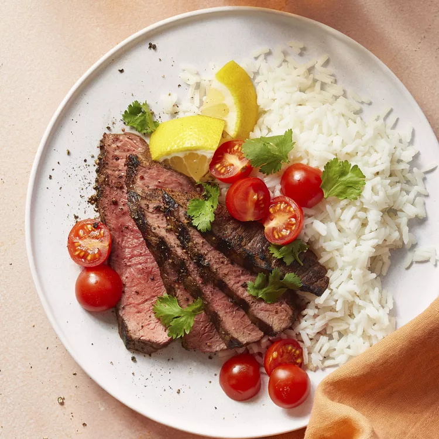

Pichana Steak

Description
Picanha steak is a prized cut of beef, especially popular in Brazilian cuisine, known for its rich flavor and tender texture. Taken from the top of the rump, this cut is easily recognized by its thick, luscious cap of fat that melts during cooking, infusing the meat with deep, buttery juices. When cooked properly — often grilled over open flames or roasted — picanha develops a beautifully charred crust while remaining succulent and juicy inside. Its balance of tenderness and bold, beefy flavor makes it a favorite for barbecues and churrascarias, where it's often seasoned simply with coarse salt to let the natural taste shine.
Ingredients
- 3 cloves garlic cloves
- 1 teaspoon kosher salt
- 1 pound beef top sirloin
- ¼ cup lemon juice
- 1 tablespoon olive oil
Steps
- Mix crushed garlic and salt together in a bowl until it makes a paste.
- Rub garlic paste all over meat. Place in a bowl; cover with lemon juice. Marinate 30 minutes to 4 hours. Remove meat from lemon juice. Baste with olive oil.
- Preheat an outdoor grill for high heat and lightly oil the grate.
- Cook meat on the preheated grill, turning frequently until outer edges are charred, but center is still raw, about 5 minutes. Remove from heat; slice off charred edges, cutting against grain.
- Return raw meat to the grill. Cook until meat is firm and slightly pink in the center, about 5 minutes per side. An instant-read thermometer inserted into the center should read 140 degrees F (60 degrees C).
Home